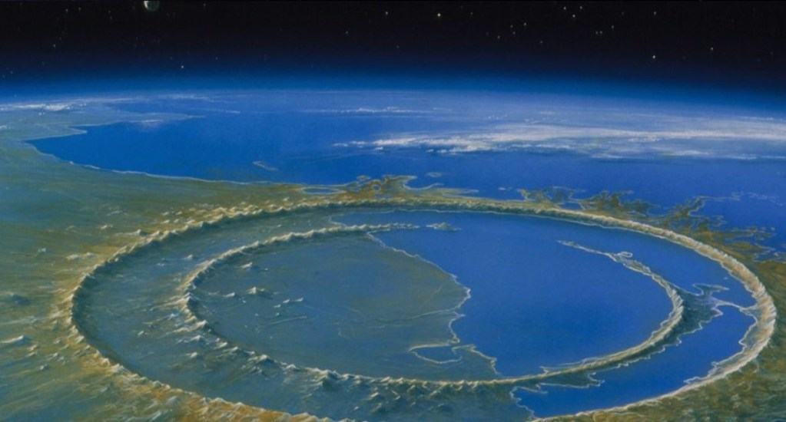

IMPACT
The Day That Killed The Dinosaurs
66 million years ago, the apocalypse happened in the spring.
Portrayals on television of the asteroid 1 that caused the Cretaceous–Paleogene extinction typically show it roaring through the atmosphere as doomed dinosaurs look upwards in stupefication. This is a lie.
Larger than Mount Everest – at least 10 to 14 kilometers across – and moving 30km every second, the asteroid that ended the dinosaurs would have punched through Earth’s atmosphere as if it was a sheet of paper. In fact, by displacing the atmosphere around it, it’s entirely possible that the top of the rocky body was still touching space the moment that its opposite end met the Earth’s surface, fifty kilometers offshore from what is now the sleepy fishing town of Chicxulub on the Yucatán Peninsula. The dinosaurs would have never seen their death coming – the impactor, composed of carbonaceous chondrite, would have most likely been invisible during the entirety of its journey to our planet. 2
What happened next is so immense in scope and scale that it is almost impossible to comprehend. Lying partly beneath the shallow waters of the Gulf of Mexico, the asteroid’s crater is still 20 kilometers deep and over 190km in diameter, even after tens of millions of years of erosion.
As it passed through the atmosphere, pressure from the impactor’s leading edge would have compressed the air beneath it to temperatures several times hotter than the surface of the sun, displacing or vaporizing millions of tons of seawater in the split second before the rocky body touched the surface. Moments later the asteroid would have obliterated the crust, vaporizing trillions of metric tons of rock while releasing the energy equivalent of several billion nuclear bombs all at once.
Eerily, the initial impact would have been completely silent: that’s another thing the visualizations get wrong. Sped up more than 300% in the superheated air, sound would still have moved slower than the heat and light that emerged from the impact, instantly killing everything within a radius of at least 500 kilometers. The heat pulse would have continued around the entire Earth, instantly transforming forests on every continent into firestorms. The sound – surely the loudest in Earth’s history – would only have followed later, carried on 800kph winds in the form of hypercanes that would have ravaged the surface and fanned the blazes still further.
The impact struck the Earth like a great bell. The area immediately around the impact – present-day Mexico and the lower United States – would have been subjected to an earthquake equivalent to a 12 on the Richter scale. The Earth’s crust cannot absorb that much energy: rather than shaking, surfaces immediately outside the molten zone would have been ejected at escape velocity, taking everything with them: plants, insects, even dinosaurs. While the thought of sauropods in space might be amusing, this would not have been the engineered, comfortable boost astronauts experience during rocket launch: the animals would have been launched upwards in a single, propulsive force measured in 100’s of G’s, squashed flat and burning up in the friction of the superheated atmosphere.
Outcomes
Landing in the worst possible place – half in relatively shallow ocean and half on land – the asteroid created twin disasters of both earthquakes and tsunamis. In the Gulf of Mexico the initial wall of water from the impact may have been as much as a mile high, carrying sediments as far north as present-day Montréal. The Earth’s oceans would have “sloshed” in response: a tsunami of that size causes ripple effects in every open body of water, with every shoreline experiencing its own disaster.
Landing in the worst possible place – half in relatively shallow ocean and half on land – the asteroid created twin disasters of both earthquakes and tsunamis. In the Gulf of Mexico the initial wall of water from the impact may have been as much as a mile high, carrying sediments as far north as present-day Montréal. The Earth’s oceans would have “sloshed” in response: a tsunami of that size causes ripple effects in every open body of water, with every shoreline experiencing its own disaster.
Minutes later, most of the ejecta would have started to return to Earth. First, the heaviest fragments that had not achieved escape velocity: rocks the size of houses, each causing its own circular wave of devastation wherever it landed. Then the lighter material: burning sphericals of rock, silicates: for a time, it may have literally been raining molten glass. Far later, dust would have settled, along with elements from the asteroid itself, such as the iridium that provided an initial clue as to the impact. 3
The devastation of that day would have undoubtedly killed billions of animals, completely wiping out many local species. But life is a tenacious thing, clinging to existence despite desperate odds. Even after the impact, there would have been millions of dinosaurs left alive. What was so particular about this impact that it could kill ¾ of the species on the planet, including all non-avian dinosaurs and flying reptiles?
The Long Death
- Recent excavations at Tanis in North Dakota have unearthed an amazing piece of archeology: slabs of rock that appear to preserve the exact moment of the Chixilub impact. Fossiled fish in the rock inhaled some of those tiny rock spheres before being preserved in a flood of mud, with a layer of iridium above them. Like tree rings, tiny developmental layers in the fish bones showed that this happened in the spring. 4 This implies that species in the northern hemisphere were more likely to be exposed during the impact, while southern species were likely hibernating. Immediate extinction was probably more profound in the north than the south.
- Dust thrown up into the atmosphere would have circulated for years, cooling the surface of the planet and blocking off sunlight. Plants would have died quickly; large herbivores would have followed, with carnivores immediately after them.
- More importantly, the area of the continental shelf where the asteroid impacted was particularly rich in calcium carbonate (calcium sulphate) and limestome (calcium carbonate). Destroyed by the heat of the impact, the calcium carbonate formed sulphur dioxide gas. Over the following months and years, the sulphur dioxide formed droplets, further scattering sunlight and cooling the Earth’s surface by up to 10°C, while falling to the surface as acid rain. This lasted not years but decades: long enough for the behemoths living on the surface of the earth and in the oceans to starve and die, but not long enough to kill the small, burrowing mammals, amphibians and avian dinosaurs, who had the advantages of protection and transport across large distances to find food.
- The distinction between “asteroid” and “comet” is becoming increasingly blurred as our understanding of both continues to grow, and debate over which one killed the dinosaurs continues. Today both are perhaps best understood as points on a continuum, or as stages of development. For the purposes of this essay, the object will be referred to as an asteroid.
- The body’s surface would probably have reflected less than 2% of the sunlight that struck it. (By comparison, a lump of coal reflects approximately 5% of its light).
- While rare on Earth, the heavy metal iridium is relatively common in certain types of asteroids. It was the peak of iridium in geological strata corresponding to 66 million years ago – the so-called “iridium anomaly” – that presented the first evidence that an asteroid impact might be associated with the extinction event.
- Paradoxically, this finding does not increase the accuracy of the impact’s date, which remains approximately 66,036,000 BCE ± 11,000 years, due to current limitations in argon-argon dating.